geom_rect and geom_tile do the same thing, but are
parameterised differently: geom_rect uses the locations of the four
corners (xmin, xmax, ymin and ymax), while
geom_tile uses the center of the tile and its size (x,
y, width, height). geom_raster is a high
performance special case for when all the tiles are the same size.
geom_raster( mapping = NULL, data = NULL, stat = "identity", position = "identity", ..., hjust = 0.5, vjust = 0.5, interpolate = FALSE, na.rm = FALSE, show.legend = NA, inherit.aes = TRUE ) geom_rect( mapping = NULL, data = NULL, stat = "identity", position = "identity", ..., linejoin = "mitre", na.rm = FALSE, show.legend = NA, inherit.aes = TRUE ) geom_tile( mapping = NULL, data = NULL, stat = "identity", position = "identity", ..., linejoin = "mitre", na.rm = FALSE, show.legend = NA, inherit.aes = TRUE )
| mapping | Set of aesthetic mappings created by |
|---|---|
| data | The data to be displayed in this layer. There are three options: If A A |
| stat | The statistical transformation to use on the data for this layer, as a string. |
| position | Position adjustment, either as a string, or the result of a call to a position adjustment function. |
| ... | Other arguments passed on to |
| hjust, vjust | horizontal and vertical justification of the grob. Each justification value should be a number between 0 and 1. Defaults to 0.5 for both, centering each pixel over its data location. |
| interpolate | If |
| na.rm | If |
| show.legend | logical. Should this layer be included in the legends?
|
| inherit.aes | If |
| linejoin | Line join style (round, mitre, bevel). |
geom_tile() understands the following aesthetics (required aesthetics are in bold):
x
y
alpha
colour
fill
group
height
linetype
size
width
Learn more about setting these aesthetics in vignette("ggplot2-specs").
# The most common use for rectangles is to draw a surface. You always want # to use geom_raster here because it's so much faster, and produces # smaller output when saving to PDF ggplot(faithfuld, aes(waiting, eruptions)) + geom_raster(aes(fill = density))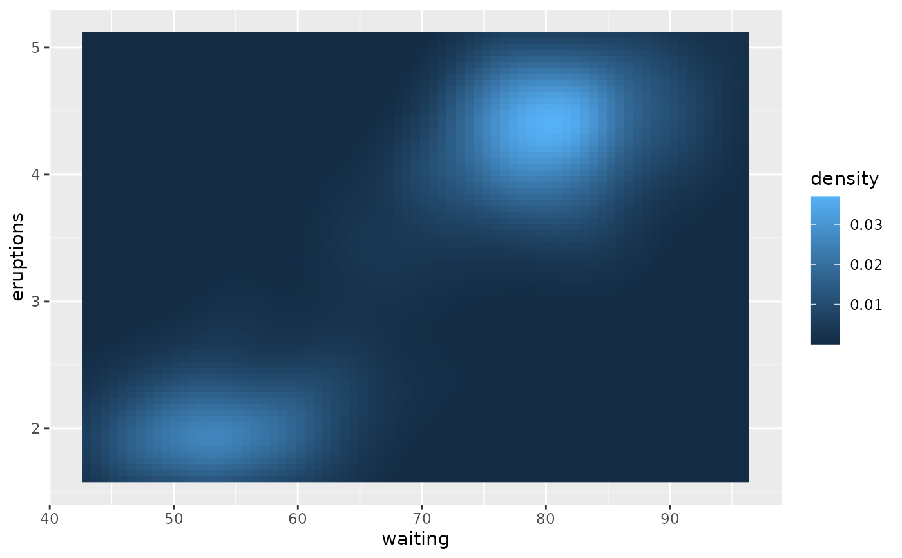# Interpolation smooths the surface & is most helpful when rendering images. ggplot(faithfuld, aes(waiting, eruptions)) + geom_raster(aes(fill = density), interpolate = TRUE)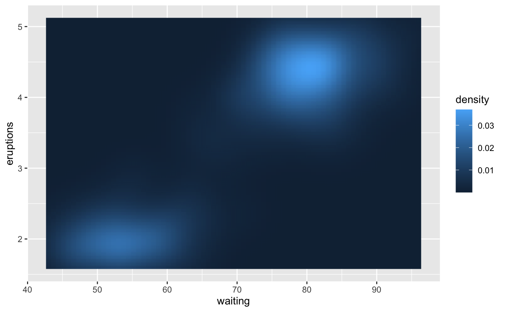# If you want to draw arbitrary rectangles, use geom_tile() or geom_rect() df <- data.frame( x = rep(c(2, 5, 7, 9, 12), 2), y = rep(c(1, 2), each = 5), z = factor(rep(1:5, each = 2)), w = rep(diff(c(0, 4, 6, 8, 10, 14)), 2) ) ggplot(df, aes(x, y)) + geom_tile(aes(fill = z), colour = "grey50")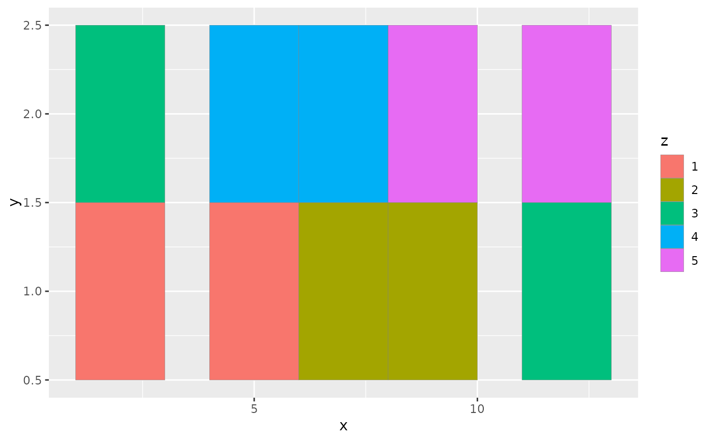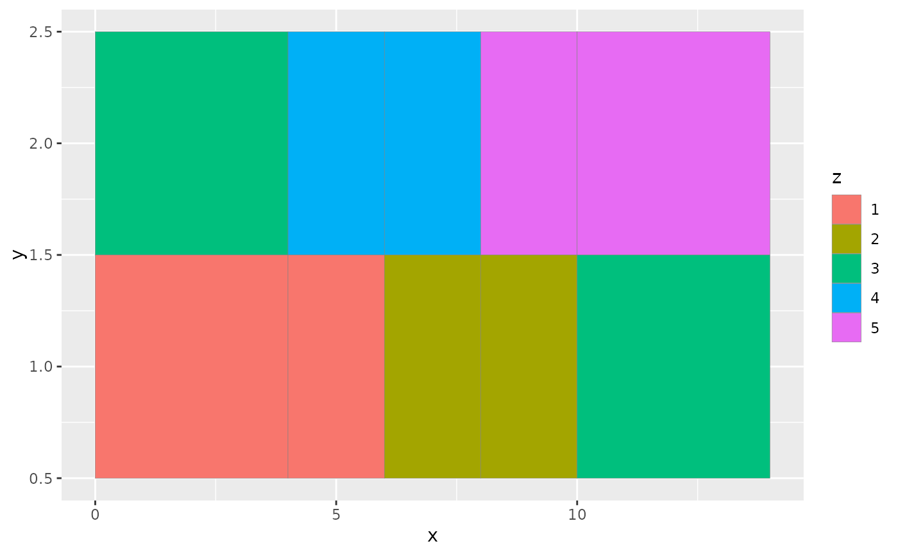ggplot(df, aes(xmin = x - w / 2, xmax = x + w / 2, ymin = y, ymax = y + 1)) + geom_rect(aes(fill = z), colour = "grey50")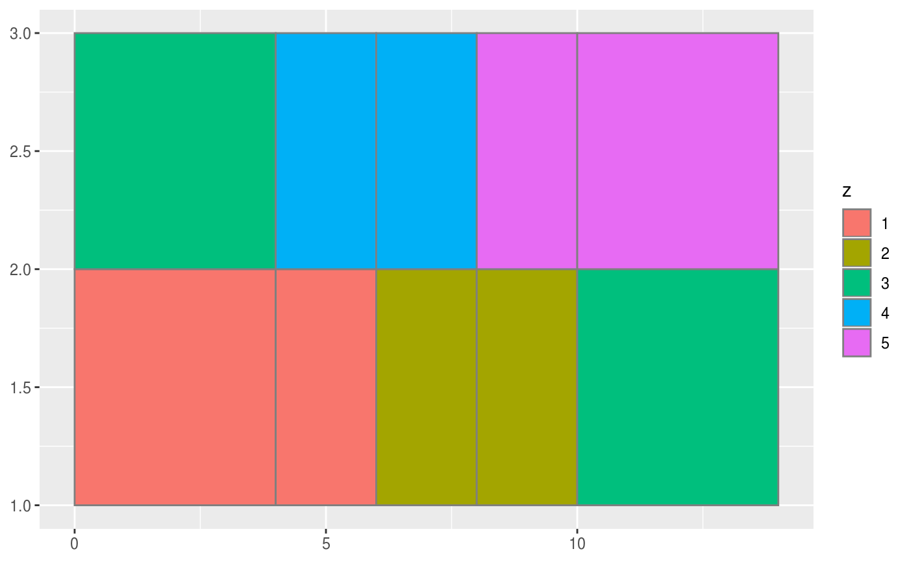# \donttest{ # Justification controls where the cells are anchored df <- expand.grid(x = 0:5, y = 0:5) df$z <- runif(nrow(df)) # default is compatible with geom_tile() ggplot(df, aes(x, y, fill = z)) + geom_raster()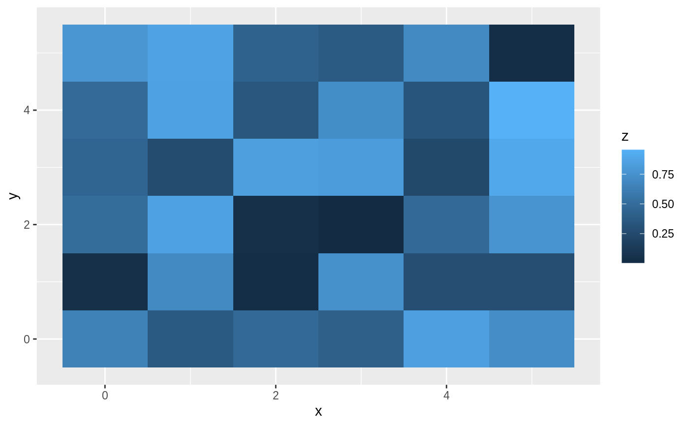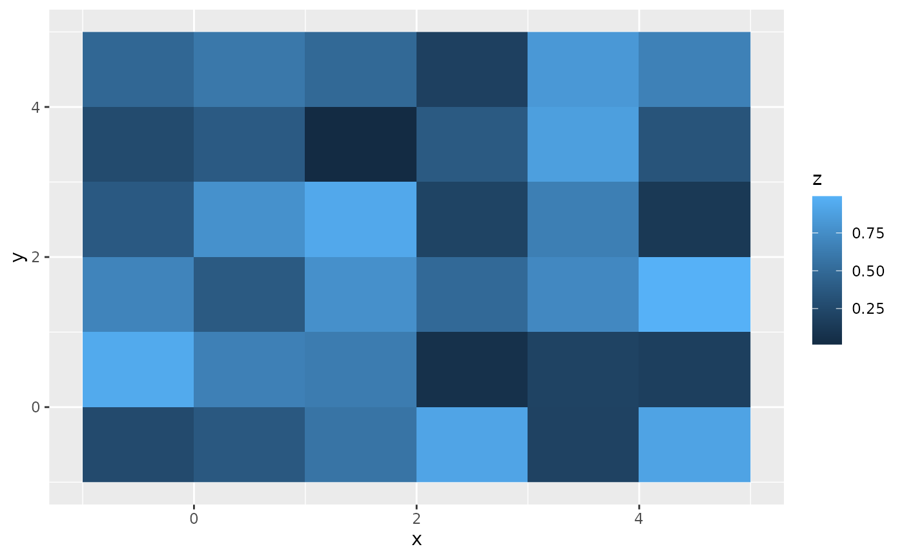# Inspired by the image-density plots of Ken Knoblauch cars <- ggplot(mtcars, aes(mpg, factor(cyl))) cars + geom_point()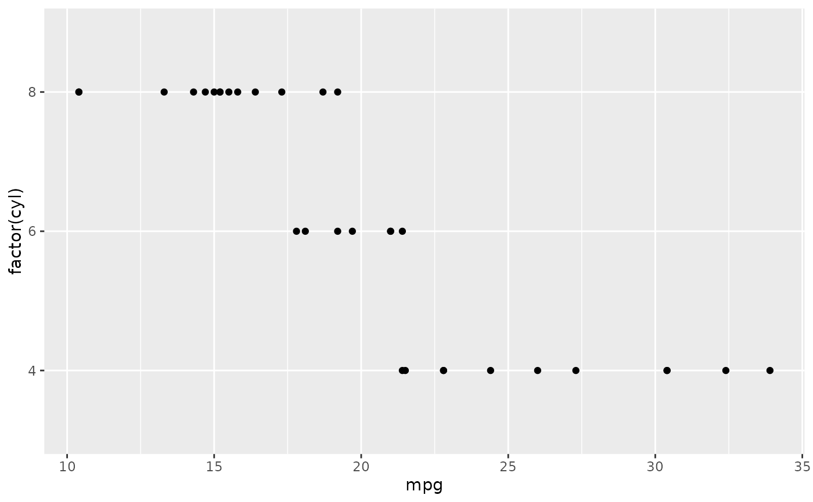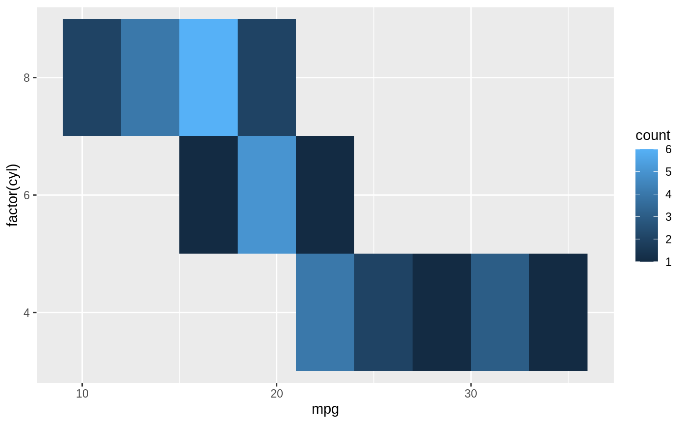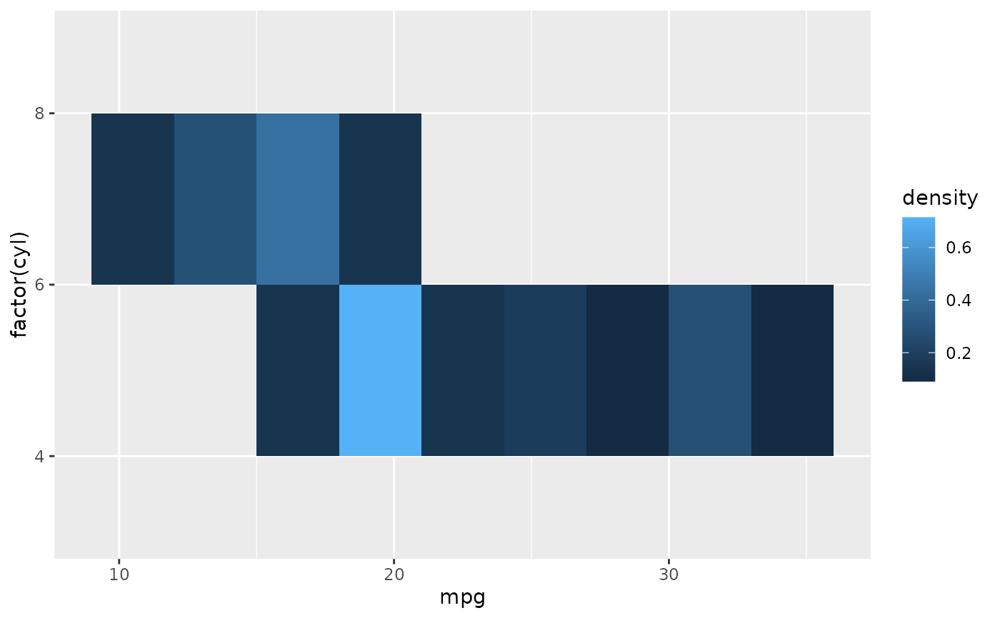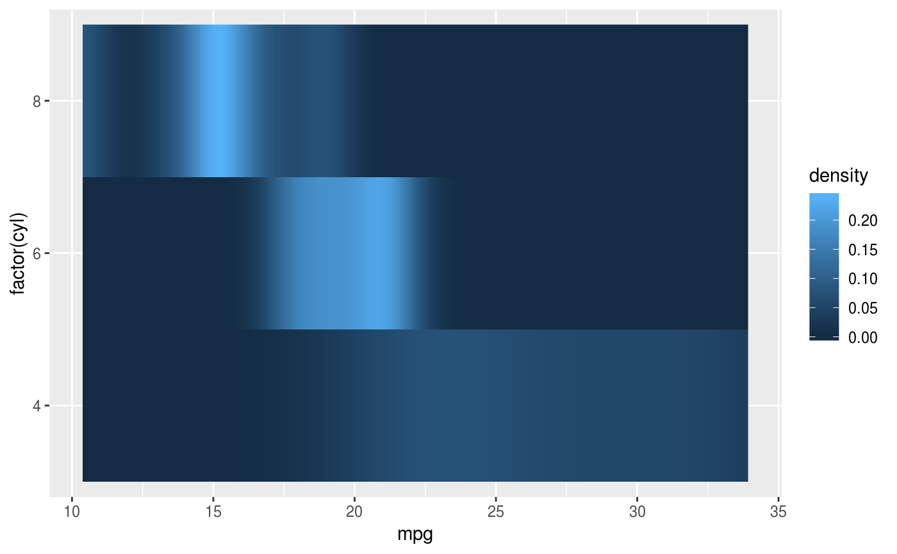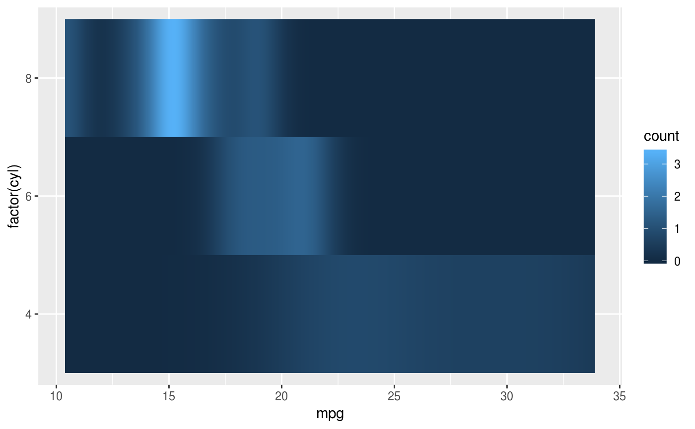# }